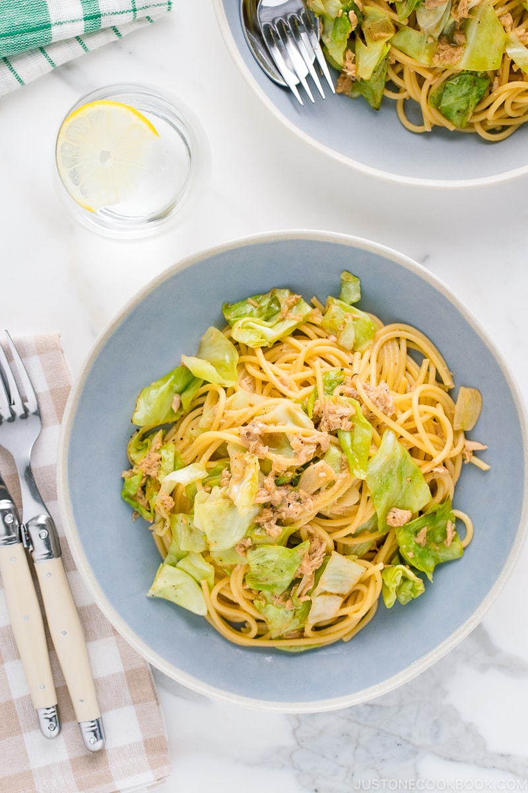

Miso Butter Pasta with Tuna and Cabbage
(キャベツとツナの和風パスタ)

Ingredients
- 1 Tbsp Diamond Crystal kosher salt (for cooking the pasta)
- 7 oz spaghetti
- 2 cloves garlic
- 3 leaves green cabbage (5 oz, 142 g)
- 1/2 (5-oz) can albacore tuna (preferably packed in olive oil) (I use 1 can of 2.8-oz,80-g Japanese-brand canned tuna)
- 1 Tbsp extra virgin olive oil
- freshly ground black pepper
- 1 Tbsp unsalted butter
- 1 Tbsp miso
- 1/4 cup reserved pasta water
- 2 tsp soy sauce
- 2 tsp mirin
Instructions
- Gather all the ingredients.
- Start boiling 4 quarts (16 cups, 3.8 L) water in a large pot (I used a 4.5 QT Dutch oven). Once boiling, add 1 Tbsp Diamond Crystal kosher salt and 7 oz spaghetti.
- Stir to make sure the noodles don’t stick to each other. While waiting for the pasta to cook, prepare the other ingredients. Tip: I usually reduce the pasta‘s recommended cooking time by 1 minute since I will continue cooking it in my sauce afterward. You should be able to prepare the other ingredients in 10 minutes while the spaghetti cooks. If you finish cooking the spaghetti first, drain it.
- Meanwhile, prepare the other ingredients. Peel 2 cloves garlic and thinly slice them.
- Remove the tough core of 3 leaves green cabbage and cut into 1-inch-square pieces.
- Drain 1/2 (5-oz) can albacore tuna (preferably packed in olive oil). Break any big chunks into smaller pieces (optional).
- Heat 1 Tbsp extra virgin olive oil in a large frying pan over medium heat. While the oil is still not hot yet, add the garlic to start infusing its flavor into the oil. Make sure to coat the garlic with the oil.
- When the garlic is sizzling and well coated with oil, add the cabbage and coat with the oil for 2 minutes or so.
- Add the canned tuna and toss it together with the cabbage.
- Add freshly ground black pepper, 1 Tbsp unsalted butter, and 1 Tbsp miso. Stir to mix well and let the butter melt completely.
- Reserve 1/4 cup reserved pasta water and add to the frying pan.
- Shake the pan and mix all the ingredients together. Make sure to dissolve the miso during this time.
- Add 2 tsp soy sauce and 2 tsp mirin.
- When the spaghetti is done cooking, pick up the noodles with a pair of tongs (or you can quickly drain in the sink) and add to the pan. Toss the spaghetti to mix it all together.
- Season the spaghetti with freshly ground black pepper. Taste and add salt if needed. The reserved pasta water I added has enough salt, so I do not add additional salt here. Serve the pasta to individual dishes. Enjoy!
Source: Just One Cookbook
Back to recipes.